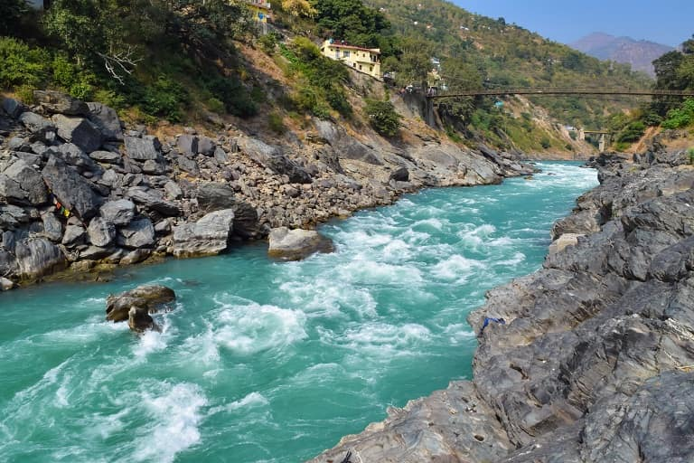
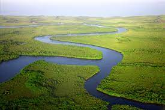
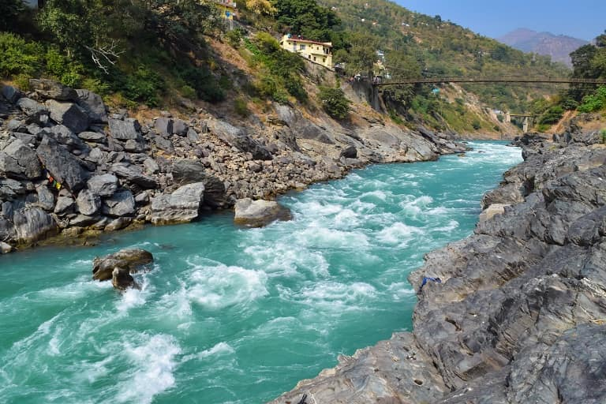
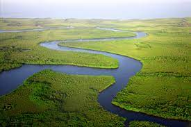

River, (ultimately from Latin ripa, “bank”), any natural stream of water that flows in a channel with defined banks . Modern usage includes rivers that are multichanneled, intermittent, or ephemeral in flow and channels that are practically bankless. The concept of channeled surface flow, however, remains central to the definition. The word stream (derived ultimately from the Indo-European root srou-) emphasizes the fact of flow; as a noun, it is synonymous with river and is often preferred in technical writing. Small natural watercourses are sometimes called rivulets, but a variety of names—including branch, brook, burn, and creek—are more common, occurring regionally to nationally in place-names. Arroyo and (dry) wash connote ephemeral streams or their resultant channels. Tiny streams or channels are referred to as rills or runnels. Rio Grande Rio Grande The Rio Grande flowing through the desert at the foot of the Chisos Mountains in Big Bend National Park, Texas. Rivers are nourished by precipitation, by direct overland runoff, through springs and seepages, or from meltwater at the edges of snowfields and glaciers. The contribution of direct precipitation on the water surface is usually minute, except where much of a catchment area is occupied by lakes. River water losses result from seepage and percolation into shallow or deep aquifers (permeable rock layers that readily transmit water) and particularly from evaporation. The difference between the water input and loss sustains surface discharge or streamflow. The amount of water in river systems at any time is but a tiny fraction of the Earth’s total water; 97 percent of all water is contained in the oceans and about three-quarters of fresh water is stored as land ice; nearly all the remainder occurs as groundwater. Lakes hold less than 0.5 percent of all fresh water, soil moisture accounts for about 0.05 percent, and water in river channels for roughly half as much, 0.025 percent, which represents only about one four-thousandth of the Earth’s total fresh water.
The inner valleys of some great alluvial rivers contain the sites of ancestral permanent settlements, including pioneer cities. Sedentary settlement in Hither Asia began about 10,000 years ago at the site of Arīḥā (ancient Jericho). Similar settlement in the Tigris-Euphrates and Nile valleys dates back to at least 6000 BP (years before present). The first settlers are thought to have practiced a hunting economy, supplemented by harvesting of wild grain. Conversion to the management of domesticated animals and the cultivation of food crops provided the surpluses that made possible the rise of towns, with parts of their populations freed from direct dependence on food getting. Civilization in the Indus River valley, prominently represented at Mohenjo-daro, dates from about 4500 BP, while civilization in the Ganges valley can be traced to approximately 3000 BP. Permanent settlement in the valley of the Huang He has a history some 4,000 years long, and the first large irrigation system in the Yangtze catchment dates to roughly the same time. Greek invaders of the Syr Darya, Amu Darya, and other valleys draining to the Aral Sea, east of the Caspian, encountered irrigating communities that had developed from about 2300 BP onward.
The influence of climatic shifts on these prehistoric communities has yet to be worked out satisfactorily. In wide areas, these shifts included episodic desiccation from 12,000 or 10,000 BP onward. In what are now desert environments, increased dependence on the rivers may have proved as much a matter of necessity as of choice. All of the rivers in question have broad floodplains subject to annual inundation by rivers carrying heavy sediment loads. Prehistoric works of flood defense and irrigation demanded firm community structures and required the development of engineering practice. Highly elaborate irrigation works are known from Mohenjo-daro; the ziggurats (temple mounds) of the Euphrates valley may well have originated in ancient Egypt in response to the complete annual inundation of the Nile floodplain, where holdings had to be redefined after each flood subsided. It is not surprising that the communities named have been styled hydraulic civilizations. Yet, it would be simplistic to claim that riparian sites held the monopoly of the developments described. Elaborate urban systems arising in Mexico, Peru, and the eastern Mediterranean from about 4000 BP onward were not immediately dependent on the resources of rivers. Where riverine cities did develop, they commanded ready means of communication; the two lands of Upper and Lower Egypt, for instance, were unified by the Nile. At the same time, it can be argued that early riverine and river-dependent civilizations bore the seeds of their own destruction, independent of major climatic variations and natural evolutionary changes in the river systems. High-consuming cities downstream inevitably exploited the upstream catchments, especially for timber. Deforestation there may possibly have led to ruinous silting in downstream reaches, although the contribution of this process to the eventual decline of civilization on the Euphrates and the Indus remains largely a matter of guesswork. An alternative or conjoint possibility is that continued irrigation promoted progressive salinization of the soils of irrigated lands, eventually preventing effective cropping. Salinization is known to have damaged the irrigated lands of Ur, progressively from about 4400 to 4000 BP, and may have ruined the Sumerian empire of the time. The relative importance of environmental and social deterioration in prehistoric hydraulic civilizations, however, remains a matter of debate. Furthermore, defective design and maintenance of irrigation works promote the spread of malarial mosquitoes, which certainly afflicted the prehistoric hydraulic communities of the lower Tigris-Euphrates valley. These same communities also may have been affected by bilharziasis, or schistosomiasis (blood fluke disease), which requires a species of freshwater snail for propagation and which even today follows many extensions of irrigation into arid lands.
Area-length-discharge combinations vary considerably, although length tends to increase with area. On all counts except length, the Amazon is the world’s principal river. The Congo and the Paraná are among the largest by area and discharge, but the Mississippi, fourth in length and fifth in area, is only seventh in discharge. The Ganges-Brahmaputra, third in discharge, is 13th (or lower) in area and well down the list of length for its two main stems taken separately. World average external runoff is about 0.01 cubic metre per second per square kilometre (0.6 cubic foot per second per square mile). Great rivers with notably higher discharges are fed either by the convectional rains of equatorial regions or by monsoonal rains that are usually increased by altitudinal effects. The Huang He averages 0.046 cubic metre per second per square kilometre, the Irrawaddy 0.032 cubic metre per second per square kilometre, the Magdalena and the Amazon 0.026 cubic metre per second per square kilometre, the Orinoco 0.021 cubic metre per second per square kilometre, and the Ganges-Brahmaputra above 0.024 cubic metre per second per square kilometre. Very high mean discharges per unit area are also recorded for lesser basins in mountainous coastlands exposed to the zonal westerlies of midlatitudes. Among great rivers with mean discharges near or not far below world averages per unit area are those of Siberia, the Mackenzie, and the Yukon (828,000 square kilometres, 5,900 cubic metres per second), all affected by low precipitation for which low evaporation rates barely compensate. The basins of the Mississippi, Niger, and Zambezi include some areas of dry climate. The Nelson illustrates the extreme effects of low precipitation in a cool climate, while the Nile, Murray-Darling, and Shaṭṭ Al-ʿArab (Tigris-Euphrates) experience low precipitation combined with high evaporation losses.
Seasonal variation in discharge defines river regime. Three broad classes of regime can be distinguished for perennial streams. In the megathermal class, related to hot equatorial and tropical climates, two main variants occur; discharge is powerfully sustained throughout the year, usually with a double maximum (two peak values), but in some areas with a strong single maximum. In the mesothermal class some regimes resemble those of tropical and equatorial areas, with single or double summer maxima corresponding to heavy seasonal rainfall, while others include sustained flow with slight warm-season minima. Where midlatitude climates include dry summers, streamflow decreases markedly and may cease altogether in the warm half of the year. In areas affected by release of meltwater, winter minima and spring maxima of discharge are characteristic. Microthermal regimes, which are influenced by snow cover, include winter minima and summer maxima resulting from snowmelt and convectional rain; alternatively, spring meltwater maxima are accompanied by secondary fall maxima that are associated with late-season thunder rain, or spring snowmelt maxima can be followed by a summer glacier-melt maximum, as on the Amu Darya. Megathermal regimes, which are controlled by systematic fluctuations in seasonal rain, and microthermal regimes, which are controlled by seasonal release of meltwater, may be more reliable than mesothermal regimes. The regime can vary considerably along the length of a single river in timing and in seasonal characteristics. Spring maxima in the Volga headwaters are not followed by peak flows in the delta until two months later. The October seasonal peak on the upper Niger becomes a December peak on the middle river; the swing from tropical-rainy through steppe climate reduces volume by 25 percent through a 483-kilometre stretch. The seasonal headwater flood wave travels at 0.09 metre per second, taking some four months over 2,011 kilometres, but earlier seasonal peaks are reestablished on the lower river by tributaries fed by hot-season rains. The great Siberian rivers, flowing northward into regions of increasingly deferred thaw, habitually cause extensive flooding in their lower reaches, which remain ice-covered when upstream reaches have already thawed and are receiving the meltwaters of late spring and summer. Extremes of regime characteristics come into question when streams are classified as perennial, intermittent, or ephemeral. These terms are in common use but lack rigid definition. Whereas the middle and lower reaches of streams in humid regions rarely or never cease flowing and can properly be called perennial, almost every year many of their upstream feeders run dry where they are not fed by springs. In basins cut in impermeable bedrock, prolonged droughts can halt flow in most channel reaches. Karst (limestone country) that has some surface drainage often includes streams that are spatially intermittent; frequently it also contains temporally intermittent streams that flow only when heavy rain raises the groundwater table and reactivates outlets above the usual level. Temporally intermittent streams also occur in dry areas where, at low stage, only some channel reaches contain flowing water.
The asteroids and comets are remnants of the planet-building process in the inner and outer solar system, respectively. The asteroid belt is home to rocky bodies ranging in size from the largest known asteroid, Ceres (also classified by the IAU as a dwarf planet), with a diameter of roughly 940 km (585 miles), to microscopic dust particles that are dispersed throughout the belt. Some asteroids travel in paths that cross the orbit of Earth, providing opportunities for collisions with the planet. The rare collisions of relatively large objects (those with diameters greater than about 1 km [0.6 mile]) with Earth can be devastating, as in the case of the asteroid impact that is thought to have been responsible for the massive extinction of species at the end of the Cretaceous Period 65 million years ago (see dinosaur: Extinction; Earth impact hazard). More commonly, the impacting objects are much smaller, reaching Earth’s surface as meteorites. Asteroid observations from Earth, which have been confirmed by spacecraft flybys, indicate that some asteroids are mainly metal (principally iron), others are stony, and still others are rich in organic compounds, resembling the carbonaceous chondrite meteorites. The asteroids that have been visited by spacecraft are irregularly shaped objects pockmarked with craters; some of them have retained very primitive material from the early days of the solar system. Read More...